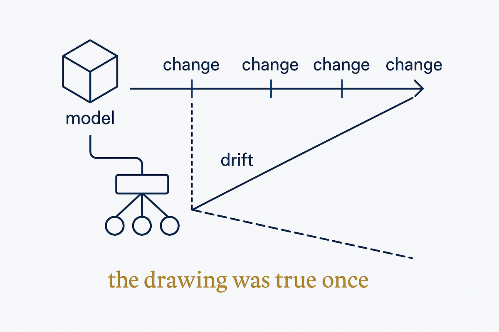

The idea
The idea in one paragraph

Every organisation has architecture diagrams that are quietly wrong. Not because anyone was careless — because a hand-drawn diagram is a copy, and copies drift the moment the thing they describe changes. The fix is not more discipline about redrawing. It is to stop copying.
If structure lives as metadata — entities, relationships, mappings, lineage — then a diagram is just a projection of it. Change the model and every picture changes with it, because there was never a second version to forget. That is the whole argument, and it turns diagramming from maintenance work into generation.
The test: when reality changes, does someone have to open a drawing tool? If yes, you have a picture. If no, you have a view.